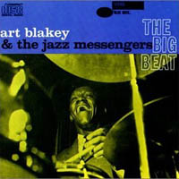
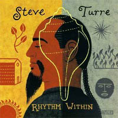

Omiljene jazz ploče II, vrh liste
5. ART BLAKEY The Big Beat
Art Blakey u obimnoj diskografiji ima i prodavanije i od kritike prihvaćenije ploče od ove, meni najdraže, ali čini mi se da je ova najujednačenija. Tačnije, na ovoj ploči je svaka kompozicija klasik. Na ovom albumu nalaze se stvari koje ste čuli milion puta, samo niste znali da je to Art Blakey i da je to The Big Beat. Objavljena 1960., ploča ulazi u "zlatnih" 10 godina jazza (uslovno 1955-1965), a koliko se meni svidja taj period može se lako zaključiti pogledom na ovu listu. Jazz Messengers su ovde u sastavu: Lee Morgan, Wayne Shorter, Jymie Merritt i Bobby Timmons. Sećate li se starih Tom i Jerry crtaća, papuča debele gazdarice koko žustro silaze niz stepenice ili super cool mačora. E, ovo su ti mačori. I to je taj ludi groove. Lični favorit sa ove ploče, vanvremenska, ultra-hip Dat Dere.
4. YUSEF LATEEF Eastern Sounds
Ovo je možda i najmirisnija ploča na ovoj mini-listi. Najmirisnija? Da. Nemam bolji opis. Atmosfera je na ovoj ploči sve. Atmosfera i savršeni tonovi koji plutaju, slike koje se menjaju, boje koje se mešaju (zvučim kao prokleti hipik;). Zaista, ovo je ploča koju bih preporučio svima, bez obzira da li volite jazz ili ne, pošto to u ovom slučaju ne igra nikakvu ulogu. Tvrdokorni jazz fanovi biće zadovoljni post-bop improvizacijama i jos uvek prepoznatljivom jazz formom, ali zvuk ove ploče je univerzalan - Eastern Sounds komunicira na mnogo dubljem, emotivnijem nivou od većine jazz ploča koje sam preslušao i to je čini veoma posebnom za mene. Sa ove ploče lični favorit je Chinq Miau i svi kojima su gotivni St.Germain, Amon Tobin, zvuk Compost Recordsa, i uopšte plesna muzika s'kraja XX veka uživaće veoma.
3. STEVE TURRE Rhythm Within
Konačno, ali kratkotrajno, se selimo u devedesete. Prva jazz ploča koju sam zaista zavoleo, prva posebna. Da li sam se prikačio na zavodljiv zvuk školjki (koje Steve Turre obilno koristi na ovom albumu) ili na zarazan ritam koji ploča ima sada više nije vazno, tek, svaki put kada slušam ovaj album mi je super i ne vidim da će se to promeniti u skorije vreme. Pominjani tvrdokorni jazz fanovi će možda osporiti zvuk na ovom albumu, ali je neosporno da je kombinacija afričkih udaraljki, školjki, sa latino prizvukom, ali ipak u vrlo pažljivo aranžiranoj jazz oblandi proizvela jedan od najboljih jazz albuma devedesetih. Ovde se kao lični favorit izdvaja prelepa verzija Yusef Lateef-ove kompozicije Morning (gle slučajnosti, ovo nije bilo planirano, majke mi) - odslušajte je par puta, osećaj je kao kad... pa, neuporediv.
2. JOHN COLTRANE Live at Village Vanguard (4CD Box Set)
Ne znam koliko je opravdano na ovakvu listu uvrstiti jedno Live izdanje, možda apsolutno? Neću vas daviti sa pričom o modalnim improvizacijama i sličnim glupostima. Ukoliko ste spremni da vam muzika oduva mozak onda ste na pravom mestu. Jurićete Coltrane ekspres (Chasin' the Train), ići u Indiju (India), upoznati prelepu Naimu (Naima), biti u Brasiliji (Brasilia), istraživati spiritualnost (Spiritual)... Srce zvuka. Motor ludila. Energija genija. Zvuk pucketanja nerava publike u iščekivanju sledećeg tona koje se meša sa zvučnim letećim ćilimom vanzemaljskog porekla. Sort of. Ukoliko niste čuli ovaj album, a mislite da ništa ne može da vas iznenadi - pokušajte. Doduše, trebalo mi je neko vreme da savladam ludilo koje ova ploča nosi; vreme i dobra koncentracija, zato nemojte puštati ovu ploču ukoliko ne nameravate da je ispratite, neće vam biti prijatno. Lični favorit: Greensleeves (B).
1. MILES DAVIS Kind of Blue
Ovo je moj omiljeni jazz album. Moj i još nekolicine desetina miliona ljubitelja muzike širom sveta. Ipak, svaki put kada slušam Kind of Blue imam osecaj da mi se Miles dirtekno obraća, da svira samo za mene. Ali, to nije razlog zbog kog se ova ploča nalazi na vrhu liste mojih favorita, pravi razlog je njena genijalnost. Zvuk zabeležen na ovoj ploči je fotografisani duh, pripitomljeni vetar, miris koji se vidi, uhvaćeni trenutak koji stalno izmiče - poseban. Priča vezana za ovaj album je da je Miles pre ulaska u studio imao samo skice kompozicija, tačnije harmonijske nacrte. Ceo album je kolektivna improvizacija koja zvuči kao da je na aranžmanima radjeno godinama i da su striktno i do kraja izvedeni, neuporedivo, iz prvog take-a. Lični favorit: All Blues.
Nadam se da će se bar neko od vas iscimati i potražiti neku od nabrojanih ploča. Ne sumnjam da ćete uživati slušajuci ih. O svakom od ovih albuma možete pročitati više ukoliko kliknete na sliku.
Komentari
morning! kako je to dobra kompozicija!!! uf!i ja je volim! I Kind of blue, tkdj
redsandra | 07.09.06 14:14
Steve Turre je bio bukvalno prvi koncert na koji sam otišao u SAD, i to prvog vikenda kad sam stigao, možeš misliti moje sreće. Na mojoj listi bi se iz devedesetih našao i Steve Coleman 'Def Trance Beat'. Idemo da gledamo i njega sad u subotu, cele nedelje mu se radujem. :)
 ubipacijentic | 07.09.06 16:31
ubipacijentic | 07.09.06 16:31
Ti se raduješ, a ja ti zavidim :)
vajarka | 07.09.06 18:24
ja sam ti više blues tip, ali mi legne stari Sachmo tu i tamo .)
 samba | 07.09.06 22:35
samba | 07.09.06 22:35
Ubi: Uh, Steve Coleman... on je bas posebna tema. Pretpostavljam da si posetio http://www.m-base.org/ ,sasavi home page sa koga mozes downloadujes masu muzike potpuno free. Uzivajte!
 kiko | 08.09.06 07:22
kiko | 08.09.06 07:22
moj omiljeni je M.Davis
satie | 08.09.06 14:14
 RSS feed
RSS feed
 sadržaji se objavljuju pod
sadržaji se objavljuju pod
Wheeeeee :)
ta plodna 59-a. Spadam u tih deset miliona sigurno.
moja je BLUE IN GREEN.
Nema cimanja. Nemam ploce, ali diskovi su sasvim, ali sasvim u redu :)))
Svaka cast za izbor!!!
etotako | 07.09.06 14:01